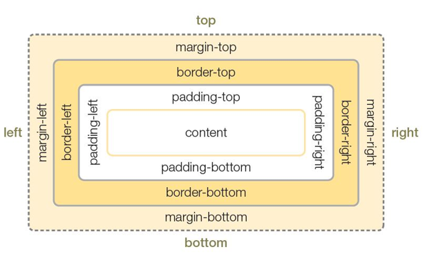

CSS3 박스 모델은 content padding border margin으로 구성되어 있다
박스 모델의 padding, border, margin 속성의 기본 값은 0이며,
상하좌우 네 가지 방향을 top, bottom, left,right를 이용하여 지정할 수 있습니다
박스모델
- 웹 문서에 텍스트, 이미지, 테이블 등의 요소를 배치하기 위해 사용
- 웹 문서의 전체 레이아웃을 정의
- 각종 요소들을 원하는 위치에 배치
박스속성
- content : 실제 내용이 표현되는 곳
- padding : 콘텐츠와 테두리 사이의 여백
- border : 박스의 테두리 두께
- margin : 테두리와 박스의 최종 경계 사이의 여백
